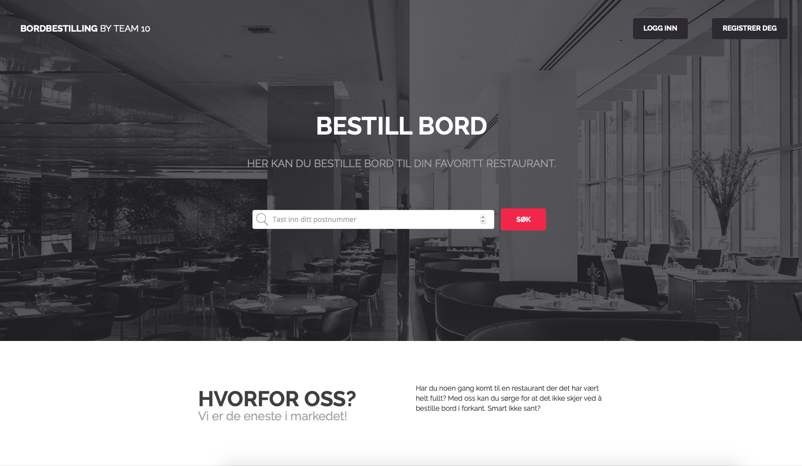

Vi er 6 gutter.
Vårt produkt er en tjeneste som skal gjøre det enklere å bestille bord ved restauranter. Tjenesten tilbys på nettside, men det er planer om å videreutvikle slik at den også kan tilbys på mobil og tablet.
Produktet vil ha mulighet for å ha både bedriftsprofil og brukerprofil. Bedriftsprofilen vil åpne for at restaurantene kan personalisere sin side etter deres eget behov. Vi ønsker også å legge til funksjonalitet som bordkart, slik at det blir lettere for både restauranten og brukeren ved reservasjon av bord.
Brukerprofilen vil gi brukeren tilgang til sin historikk, og anbefalinger til hvor de kan være interessert i å spise basert på historikken.
Senere vil funksjonalitet som områdekart bli tilgjengelig. Dette åpner for at brukeren kan gjøre et områdesøk for å finne restauranter og planlegge transport. Kartfunksjonen vil også ha en oversikt over parkeringsmuligheter. Brukerne vil kunne skrive inn tilbakemelding og vurdere restaurantene dersom restaurantene skulle ønske dette.
Prosjektets mål er å forenkle hvordan man bestiller bord på restauranter. Dette skal oppnås ved å skape et stabilt og trygt system, som tilrettelegger for både kunde og bruker.
Vedlegg: ProsjektbeskrivelseUtklipp av nettsiden
